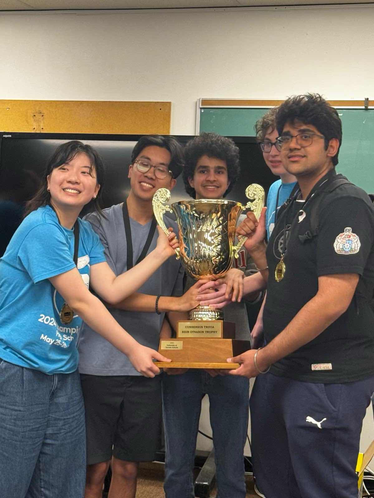

Competitive Trivia
“Reach for the Top” and Consensus Trivia are team-based trivia
games, similar to Jeopardy or Quiz Bowl. In teams of four, students
attempt to answer a variety of trivia questions ranging from history
to sports to current events to historical politics. As the
Competitive Trivia club captain at my school, my role was to create
a competitive team by recruiting strong players, providing coaching
and training to all participants, as well as facilitating practices.
I was also responsible for leading the team in tournaments, making
strategic decisions on team composition and acting as a liaison with
tournament directors.The UTS Competitive Trivia team won the 2023
and 2024 Reach for the Top and Consensus Trivia National
Championships.